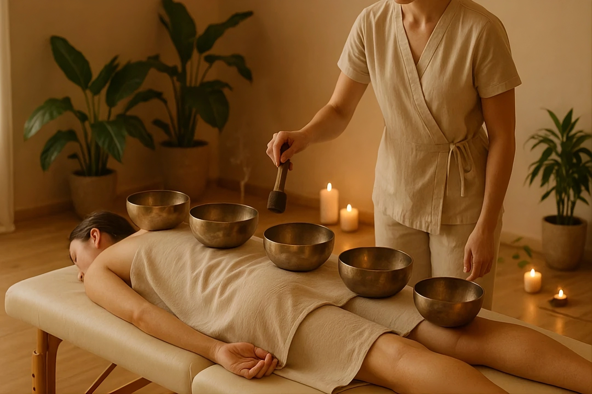

Перед началом
Устройтесь удобно лёжа. Обсудите комфортную громкость и уточните, хотите ли вы, чтобы чаши ставили на тело.

Я провожу сеансы звукового массажа
с тибетскими поющими чашами.
г.Ижевск
Виброакустический массаж с поющими чашами — это практика глубокого расслабления, основанная на воздействии мягких звуков и вибраций.
Чтобы снять повседневное напряжение, отдохнуть от суеты, восстановить ощущение внутреннего равновесия и уделить время себе.
Влияние виброакустического массажа↗Во время сеанса чаши звучат рядом с человеком или стоят на теле поверх одежды. Внимание постепенно переходит от звука к ощущению вибрации.
Устройтесь удобно лёжа. Обсудите комфортную громкость и уточните, хотите ли вы, чтобы чаши ставили на тело.
Я мягко ударяю колотушкой по краю чаши. Можно слушать, как меняется тембр, или замечать, где ощущается отклик.
Полежите немного в тишине. Отметьте, как вы себя чувствуете, и дайте себе время, прежде чем встать.
В наблюдательном исследовании участники сообщали о меньшем напряжении после звуковой медитации. В исследовании не было контрольной группы, поэтому отделить влияние чаш от отдыха и обстановки нельзя.
Исследование звуковой медитации ↗ · Описание звукового массажа ↗Оставьте своё имя и номер телефона, и я свяжусь с вами, чтобы подобрать удобное время для сеанса звукового массажа. Также здесь можно задать любой вопрос о практике.